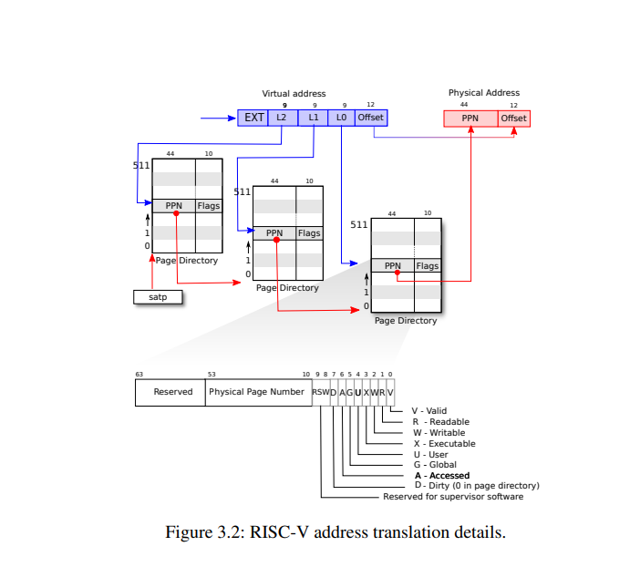

地址空间
页表介绍
Xv6跑在 Sv39 RISC-V下，该模式下虚拟地址只用到低39位其中前27位作会被解释索引找到物理块号再加上后12位得到物理地址。
（注：这27位会被分为单级和多机索引）

#define PTE_V (1L << 0) // valid
#define PTE_R (1L << 1)
#define PTE_W (1L << 2)
#define PTE_X (1L << 3)
#define PTE_U (1L << 4) // user can access
内核空间
Xv6会为每个进程维护一个页表，内核也有一个页表方便内核以可预测的速度访问物理空间和硬件资源。
相关的数据定义
//where in kernel/riscv.h
#define PGSIZE 4096 // bytes per page
#define PXMASK 0x1FF // 9 bits
#define PGROUNDUP(sz) (((sz)+PGSIZE-1) & ~(PGSIZE-1))
#define PGROUNDDOWN(a) (((a)) & ~(PGSIZE-1))
#define PXSHIFT(level) (PGSHIFT+(9*(level)))
#define PX(level, va) ((((uint64) (va)) >> PXSHIFT(level)) & PXMASK)
#define MAXVA (1L << (9 + 9 + 9 + 12 - 1))
#define PA2PTE(pa) ((((uint64)pa) >> 12) << 10)
#define PTE2PA(pte) (((pte) >> 10) << 12)
地址空间
最重要的函数
//pagetable_t 指向根页表 kernel or process
//找到相应的页表项，没有则分配
// where in kernel/vm.c
walk(pagetable_t pagetable, uint64 va, int alloc)
{
if(va >= MAXVA)
panic("walk");
for(int level = 2; level > 0; level--) {
pte_t *pte = &pagetable[PX(level, va)];
if(*pte & PTE_V) {
pagetable = (pagetable_t)PTE2PA(*pte);
} else {
if(!alloc || (pagetable = (pde_t*)kalloc()) == 0)
return 0;
memset(pagetable, 0, PGSIZE);
*pte = PA2PTE(pagetable) | PTE_V;
}
}
return &pagetable[PX(0, va)];
}
kvminit为内核申请一页的空间，然后调用kvmmap，在即将装载的内核页表上建立一系列的直接映射，包括I/O设备、内核代码和数据、内核空闲内存段等。
```c++
kvminit(void)
{
kernel_pagetable = kvmmake();
}
pagetable_t
kvmmake(void)
{
pagetable_t kpgtbl;
kpgtbl = (pagetable_t) kalloc();
memset(kpgtbl, 0, PGSIZE);
// uart registers
kvmmap(kpgtbl, UART0, UART0, PGSIZE, PTE_R | PTE_W);
// virtio mmio disk interface
kvmmap(kpgtbl, VIRTIO0, VIRTIO0, PGSIZE, PTE_R | PTE_W);
// PLIC
kvmmap(kpgtbl, PLIC, PLIC, 0x400000, PTE_R | PTE_W);
// map kernel text executable and read-only.
kvmmap(kpgtbl, KERNBASE, KERNBASE, (uint64)etext-KERNBASE, PTE_R | PTE_X);
// map kernel data and the physical RAM we'll make use of.
kvmmap(kpgtbl, (uint64)etext, (uint64)etext, PHYSTOP-(uint64)etext, PTE_R | PTE_W);
// map the trampoline for trap entry/exit to
// the highest virtual address in the kernel.
kvmmap(kpgtbl, TRAMPOLINE, (uint64)trampoline, PGSIZE, PTE_R | PTE_X);
// allocate and map a kernel stack for each process.
proc_mapstacks(kpgtbl);
return kpgtbl;
}
void
kvmmap(pagetable_t kpgtbl, uint64 va, uint64 pa, uint64 sz, int perm)
{
if(mappages(kpgtbl, va, sz, pa, perm) != 0)
panic("kvmmap");
}
//为页表建立映射项
int
mappages(pagetable_t pagetable, uint64 va, uint64 size, uint64 pa, int perm)
{
uint64 a, last;
pte_t *pte;
if(size == 0)
panic("mappages: size");
a = PGROUNDDOWN(va);
last = PGROUNDDOWN(va + size - 1);
for(;;){
if((pte = walk(pagetable, a, 1)) == 0)
return -1;
if(*pte & PTE_V)
panic("mappages: remap");
*pte = PA2PTE(pa) | perm | PTE_V;
if(a == last)
break;
a += PGSIZE;
pa += PGSIZE;
}
return 0;
}
在调用kvminit申请初始化空间过后，main调用kvminithart来装载内核页表的根页表地址到satp寄存器中
void
kvminithart()
{
// wait for any previous writes to the page table memory to finish.
sfence_vma();
w_satp(MAKE_SATP(kernel_pagetable));
// flush stale entries from the TLB.
sfence_vma();
}
在内核空间下，main马上就调用procinit，为每个用户进程分配一个内核栈，该内核栈将被映射到内核虚拟地址空间的高地址部分，位于trampoline下方。生成虚拟地址的步长为2页，而且只处理低的那一页，这样高的一页就自动成了保护页（PTE_V无效）。更新了所有内核栈的PTE之后，最后调用kvminithart更新一次satp寄存器，分页硬件就能使用新的页表。
void
procinit(void)
{
struct proc *p;
initlock(&pid_lock, "nextpid");
// 开始时p=proc，即p的地址是proc数组的最开始位置
// 每次遍历p就指向下一个进程结构
for(p = proc; p < &proc[NPROC]; p++) {
initlock(&p->lock, "proc");
// Allocate a page for a kernel stack, for each process
// Map it high in memory at the va generated by KSTACK, followed by an invalid guard page.
char *pa = kalloc();
if(pa == 0)
panic("kalloc");
// 指针相减就是地址相减，获取当前进程p和proc数组最开始位置的偏移量
// 比如第一次，从p-proc=0开始，KSTACK生成虚拟地址: TRAMPOLINE - 2*PGSIZE
// 因此TRAMPOLINE的下面第一页是guard page，第二页是kstack，也就是va指向的位置
// 后面也以此类推，被跳过而未被处理的guard page，PTE_V是无效的
uint64 va = KSTACK((int) (p - proc));
// adds the mapping PTEs to the kernel page table
// 内核栈可读可写，但在用户态不可访问，也不能直接执行
kvmmap(va, (uint64)pa, PGSIZE, PTE_R | PTE_W);
p->kstack = va;
}
// 将更新后的内核页表重新写入到satp中
kvminithart();
}
物理空间分配
内核在运行时会分配和释放很多物理内存，xv6将一部分的物理内存，从kernel data结束开始，到PHYSTOP为止，这一部分称为free memory，用于运行时的内存分配。每次分配和回收都以页为单位，一页大小4KB，通过一个空闲物理帧链表free-list，将空闲的物理帧串起来保存。页表、用户内存、内核栈、管道缓冲区等操作系统组件需要内存时，内核就从free-list上摘下一页或者多页分配给它们；在回收已经分配出去的内存时，这些被回收的物理帧，内核将它们一页页地重新挂到free-list上。
struct run {
struct run *next;
};
struct {
struct spinlock lock;
struct run *freelist;
} kmem;
extern char end[]; // first address after kernel.
// defined by kernel.ld.
//initialize the allocator
void
kinit()
{
// initializes the free list to hold every page between the end of the kernel and PHYSTOP
// xv6 assumes that the machine has 128MB of RAM
initlock(&kmem.lock, "kmem");
// kernel data之后到PHYSTOP之前都可以用于分配
// add memory to the free list via per-page calls to kfree
freerange(end, (void*)PHYSTOP);
}
void
freerange(void *pa_start, void *pa_end)
{
char *p;
p = (char*)PGROUNDUP((uint64)pa_start);
//kfree是头插法
for(; p + PGSIZE <= (char*)pa_end; p += PGSIZE)
kfree(p);
}
void
kfree(void *pa)
{
struct run *r;
if(((uint64)pa % PGSIZE) != 0 || (char*)pa < end || (uint64)pa >= PHYSTOP)
panic("kfree");
// Fill with junk to catch dangling refs.
memset(pa, 1, PGSIZE);
// casts pa to a pointer to struct run, which records the old start of the free list in r->next,
// and sets the free list equal to r
r = (struct run*)pa;
acquire(&kmem.lock);
r->next = kmem.freelist;
kmem.freelist = r;
release(&kmem.lock);
}
void *
kalloc(void)
{
// removes and returns the first element in the free list.
// When a process asks xv6 for more user memory, xv6 first uses kalloc to allocate physical pages.
struct run *r;
acquire(&kmem.lock);
r = kmem.freelist;
if(r)
kmem.freelist = r->next;
release(&kmem.lock);
if(r)
memset((char*)r, 5, PGSIZE); // fill with junk
return (void*)r;
}